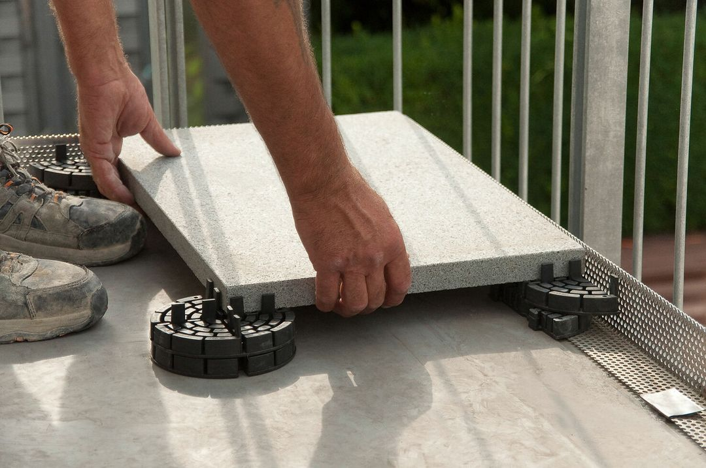
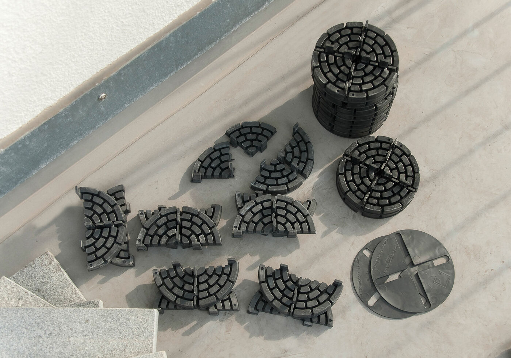
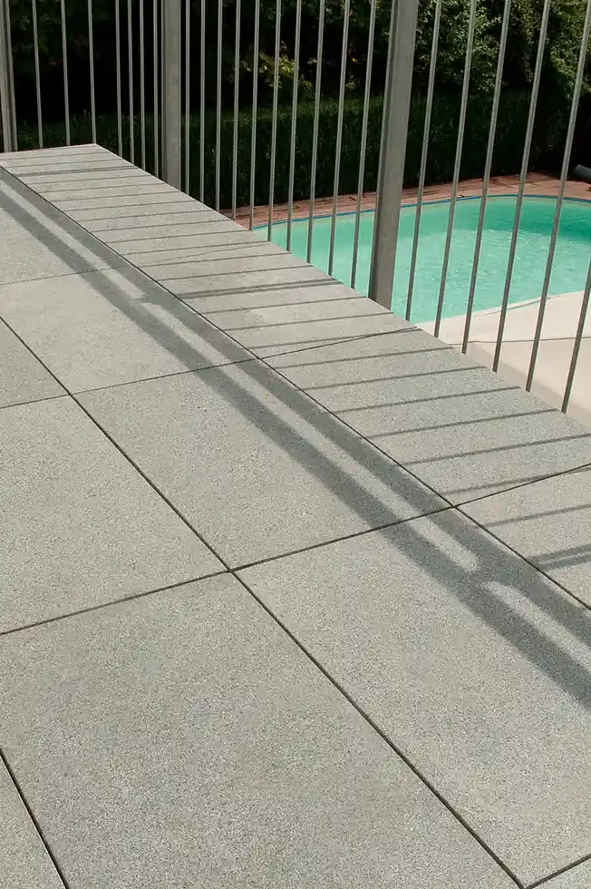

seit über 50 Jahren sind wir die erste Wahl für Profis und Heimwerker, wenn es um die professionelle Verlegung von Platten geht.
Als Familienunternehmen in 3. Generation und Marktführer für Stelzlager aus Recyclingkunststoff verbinden wir zertifizierte Qualität (DIN EN ISO 9001) mit einfacher Anwendung und besonderer Umweltverträglichkeit.
Was uns auszeichnet?
Unsere PLATTENFIX-Systeme machen die Verlegung einfach und präzise. Vom STANDARD-Lager für ebene Flächen über MAXI und MULTI für Höhenausgleiche bis 24,5 cm bis hin zu den VARIO-Stelzlagern, die Gefälle stufenlos und sogar nachträglich ausgleichen. Unsere Fugenkreuze, inklusive der speziellen Rasenfugenkreuze, garantieren dabei immer den perfekten Abstand.
Alle PLATTENFIX-Produkte sind Teil der Wiederverwertungskette. Entweder bestehen sie selbst zu 100 Prozent aus recycelten Kunststoffen, oder sie sind aus mehrfach 100-prozentig recycelbaren Materialien hergestellt.



Schon unser preisgünstiges Basismodell STANDARD Plattenlager überzeugt mit durchdachter Funktionalität und lässt sich besonders leicht verlegen.

Sie möchten Platten auf einem Untergrund verlegen, der Höhenunterschiede aufweist? Hier kommt der große Auftritt von MAXI, unserem stapelbaren Plattenlager!

MULTI und MULTI+PLUS Plattenlager sind vielfältig einsetzbar – und meistern sogar Höhenunterschiede von bis zu 24,5 cm auf den Millimeter genau.

Mit vier Zahnrädern gegen das Gefälle: Unsere beiden VARIO-Lager stemmen nicht nur besonders große Terrassenplatten, sondern gleichen auch Gefälle stufenlos aus.

Genial einfach, einfach genial: Unsere Fugenkreuze halten Ihre Steine und Terrassenplatten auf gebührenden Abstand – und zwar schön gleichmäßig. Da freut sich auch der Wasserkreislauf!

Ihr Garten oder Hof soll ordentlich aussehen, aber gleichzeitig der Natur freien Lauf lassen? Mit unseren besonders umweltfreundlichen Rasenfugenkreuzen kein Problem!
....
.....




Zertifiziert nach DIN EN ISO 9001